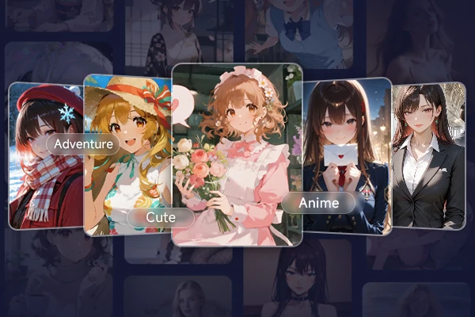
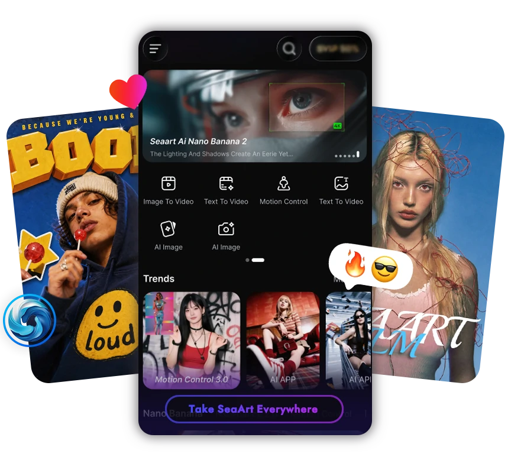

SeaArt 新手入门：从零到画出第一张 AI 图像，其实只要五分钟
第一次接触 AI 绘画和 AI 角色聊天？SeaArt 这款应用把创作和陪伴揉在一起，本文带你从注册到第一次出图，一条最短路径走通。
这篇能带你从完全不懂到用起来——不需要你会画画，不需要你懂任何 AI 术语，五分钟搞定。
它到底是干嘛的：一个生活化类比
去 SeaArt官网 看看这款产品，把它想象成一个"魔法工具箱"：打开盖子，左边是一个会画画也会拍视频的 AI 小助手，右边是一排随时能聊天的 AI 伙伴。你说一句话，左边那个小助手就能画出一张图或一段视频给你；你觉得孤单了，右边随便揪一个角色就能陪你唠——动漫少女、历史人物、虚拟偶像，上百万个角色等着被你唤醒。
和那种"只做一件事"的 AI 工具不同，SeaArt 的核心卖点就是"揉在一起"：聊天时可以让角色当场画一幅画给你看，画完的图可以直接用在角色形象上，角色形象又能拿去生成视频。整个创作链路在一个应用里就走完了。

五分钟上手：从下载到第一次跑通
第一步：拿到应用
想要 SeaArt下载 也很方便——Web 端直接用浏览器打开就能玩，手机端有 iOS 和 Android App，还有桌面客户端。你选哪种顺手就用哪种，Web 端最快，什么都不用装，打开就开始。
第二步：注册（或者不注册）
打开应用后，它不会逼你立刻登录。未登录状态下你可以匿名浏览社区、使用 AI 角色聊天、试用大部分创作功能——这一点挺友好的，你完全可以先玩再决定要不要注册。
如果想注册也很方便：填邮箱收验证码，或者用手机号，或者 Google、Apple 一键登录。注册的好处是创作的作品、收藏的模型、聊过的角色都会同步到云端，手机换电脑也能接着用。
第三步：第一次跑通——选个最简单的入口
现在你已经进来了，面对首页密密麻麻的功能入口可能有点懵。别担心，我们走最短路径：
进 AI 角色库，随便挑一个开始聊天。
点击首页的"AI 角色聊天"，你会看到分类卡片：热门推荐、AI 女友男友、动漫角色、角色扮演、兽人福瑞、虚拟偶像……随便点一个分类，再随便点一个角色卡片（挑头像顺眼的就行），进入角色详情页，看看其他用户的公开对话记录，觉得还行就点"开始聊天"。
输入框里打一句话——比如"你好，能介绍一下自己吗？"——发出去。几秒钟后角色就会按它设定好的性格回应你。恭喜，你已经跑通了第一次 SeaArt 交互。
上手后先玩这三个功能
五分钟过去了，你已经有了基础认知。现在轮到三个新手最值得先碰的点，每个我都说清楚"你会看到什么"和"这意味着什么"。
一、图像生成——让 AI 画出你脑子里的画面
在应用里找到"AI 图像生成"入口，你会看到一个提示词输入框和模型选择器。模型选择器默认会帮你选好一个官方推荐的模型，你不用改——官方模型参数预设合理，出图稳定，不会出现有些社区模型那种"全图崩坏"的情况。
提示词框里随便写点什么，比如"一只戴着宇航员头盔的柴犬，站在月球上，背景是蓝色的地球"，点生成。等十几秒，一张图就出来了。
你会看到什么：生成结果下面有一排"变体"按钮，点一下可以让 AI 基于当前图再生成几张不同的版本。
这意味着什么：你不需要一次就写出完美的提示词——先跑一张，看差在哪，再调整提示词或点变体让 AI 自己探索，比一次性憋大招高效得多。
二、挑一个社区模型试试效果
图像生成界面的模型选择器点开后，你会看到"独家"分类下是官方精选模型，还有"动漫""写实""角色""风格"等一大堆社区分类。
点进"动漫"分类，按下载量排序，挑一个下载量最高的模型，点"试用"按钮。试用页面已经帮你填好了示例提示词，直接点生成就行。
你会看到什么：同样的提示词，换了模型之后画风可能完全不一样——官方模型出的是干净整洁的插画感，社区模型可能出的是更浓郁的日系二次元风。
这意味着什么：模型是 SeaArt 最核心的变量。70 万+ 模型摆在那，每个模型都是一种"画风滤镜"。你找到对口味的模型，再写提示词，出图质量会比乱选模型高好几个档次。找到好模型记得点收藏，下次直接从"我的收藏"里进。
三、创建自己的 AI 角色
玩了别人做的角色，现在试试自己建一个。
在 AI 角色板块点击"创建角色"，你会看到两条路：智能生成和专业自定义。走智能生成那条——它只会问你四五个简单问题：角色性别、性格、外观描述、一句开场白。回答完，AI 自动帮你生成完整的角色设定，包括背景故事、详细性格特征、常用语。
点"完成"，你的第一个 AI 角色就创建好了。进入"我的角色"列表，就能随时和它聊天。
你会看到什么：创建完成后有一个"公开"开关，打开后其他用户也能看到并和你的角色聊天。
这意味着什么：智能生成这条路把"专业自定义"里那一堆需要手动填写的字段（性格标签、背景故事、记忆锚点……）都帮你自动填完了，省了你从零搭人设的功夫。等你熟了，再走专业自定义那条路，手动调性格细节、加记忆锚点。如果需要逐个字段的详细说明，参考 SeaArt文档 里的角色创建指南会更清楚。

小白的三个常见疑问
玩了一轮之后，你大概率会遇到下面这些问题。提前说清楚，免得踩坑。
AI 角色为什么会"忘记"之前聊过什么？
这是新手最常困惑的点。原因其实很简单：
免费版的记忆长度有限，AI 只能记住单次对话内的上下文。如果对话太长，早期的话可能被"挤出"记忆窗口。就像一个人的工作记忆容量有限，聊了五十轮之后，第一轮说的话它可能就想不起来了。
解决办法有两个。一是创建角色时在"记忆锚点"区域手动填写你的名字、喜好、你们之间的约定——这部分是强制保留的，不会被挤出记忆。二是升级到专业版，付费版有 2 倍和 5 倍长记忆，长对话连贯很多。
数据安全吗？我聊的内容和创作的作品会被别人看到吗？
SeaArt 宣称 AI 角色聊天采用端到端加密，匿名状态下聊天不留痕迹。你的作品、LoRA、角色、收藏等数据默认只对你自己可见——只有你主动点了"公开到社区"，其他用户才能看到。
唯一需要注意的是：公开到社区的作品，平台可能根据社区规范用于模型训练。私密作品肯定不会被用于训练。在意这一点的话，发布前留意一下授权设置。
模型那么多（70 万+），怎么选？
别硬啃全部——那是资深玩家才需要做的事。给你一个简单三步法：
- 先从独家分类开始：官方调优的模型，参数预设合理，出图稳定，零踩坑
- 知道要做什么风格就从对应分类进：要动漫就进动漫分类，要写实就进写实分类，比在搜索框乱搜高效得多
- 看评分和下载量，高的通常靠谱：再点"试用"按钮用示例提示词跑一遍，不满意就换
找到合适的收藏起来，下次直接用。70 万模型是资源库，不是需要你一次性消费的清单。
接下来
恭喜你走完了 SeaArt 的最短上手路径。你现在已经会和 AI 角色聊天、会出一张基本的 AI 图像、会创建自己的角色——这些已经够你玩一阵子了。
如果想更进一步试试，推荐你往两个方向走：一个是视频生成——用"图像生成"里的图直接转成视频，或者用"文本生成视频"从零做一段短视频；另一个是 LoRA 训练——用几张你的照片训练一个专属 LoRA，然后出图时加上它，让所有模型都能画出"你的风格"。这两个功能都在应用里有明确的入口，等你对基础操作熟了再碰也不迟。手头整理了一份完整的功能指南和练习素材，在 GitHub、Gitee 和 GitCode 三个仓库都能拿到，按自己常用的平台选就好。